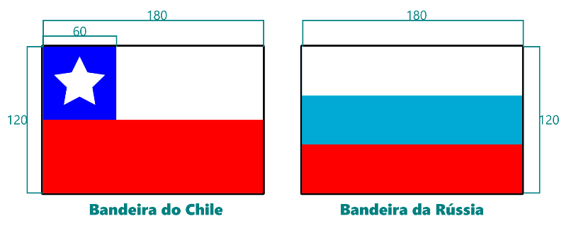

Você já aprendeu algumas peculiaridades de formas básicas como retângulo, elipse e estrela. Notou ainda que quadrados e círculos, em softwares de design gráfico, são na realidade, retângulos e elipses com proporções iguais de altura e largura. Nos próximos exercícios veremos como trabalhar com essas formas, e como alinhar e arranjar objetos em relação à seleção e à página. Para isso faremos mais alguns tutoriais rápidos de treinamento.
Em nosso primeiro tutorial desenharemos a bandeira do Brasil.
1. Clique na ferramenta elipse.
2. Com a tecla Control pressionada, clique numa área vazia da tela e arraste para desenhar um círculo.
3. Pegue a ferramenta seleção e altere a largura e a altura para 90.
4. Clique na cor azul mais escura.
1. Procure a ferramenta “Polígonos e Estrelas” e clique.
2. Na Barra de Propriedades altere o tipo para polígono regular.
3. Na quantidade de lados digite 4 e pressione Enter.
4. Com a tecla Control pressionada, clique numa área vazia da tela e arraste para cima para desenhar o losango no ângulo correto.
5. Pressione S para pegar a ferramenta seleção e selecione o losango.
6. Altere a largura para 180 e a altura para 120.
7. Clique na cor amarela.
1. Procure na Barra de Ferramentas a ferramenta retângulo e clique.
2. Clique e arraste na tela para desenhar um retângulo.
3. Clique na ferramenta Seleção e clique o retângulo que criou.
4. Na Barra de Propriedade altere a largura para 180 e a altura para 120.
5. Clique no verde-escuro da paleta de cores.
6. Se necessário, defina os arredondamentos dos cantos como 0, em Rx e Ry.
1. Com a ferramenta seleção, clique e arraste abrindo uma seleção sobre todos os objetos, se alguns estiverem fora da tela, diminua o zoom rodando a scroll para trás com a tecla Control pressionada. Você pode ainda selecionar um por um mantendo a tecla Shift pressionada e clicando sobre eles.
2. Clique no menu Objeto e selecione a opção Alinhar e Distribuir, lá no final.
3. Na janela que abrirá, em Alinhamento, selecione “Centralizar no Eixo Vertical” e “Centralizar no Eixo Horizontal”.
O círculo e o losango desapareceram! E agora? Calma, eles não desapareceram, apenas estão um embaixo do outro por causa da ordem em que foram desenhados. Desenhamos em ordem inversa de propósito, pois agora veremos como arranjá-los um sobre o outro:
1. Clique no retângulo.
2. Pressione a tecla End para enviá-lo para baixo de todos os objetos.
3. Clique no losango.
4. Pressione a tecla PageDown para fazê-lo descer uma camada.
5. A tecla PageUp faz os objetos subirem uma camada e a tecla Home os envia para o topo dos objetos, mas não necessitaremos delas agora.
Salve seu arquivo.
Ainda não faremos a faixa branca nem a frase Ordem e Progresso pois ainda não aprendemos a trabalhar com texto ou operações booleanas, veremos isso em breve. Agora vamos exportar o desenho para sua pasta.
1. Com a ferramenta seleção, abra uma área de seleção sobre todos os objetos.
2. Clique no menu Arquivo e selecione Exportar Imagem Bitmap.
3. Na janela de encaixe que se abriu, clique em Exportar Como, digite um nome para o arquivo, escolha o formato .png, navegue até sua pasta e clique em Exportar.
Neste exercício treinaremos um pouco do que já aprendemos. Abra um novo arquivo e salve com o nome Exercício Bandeiras, e tente desenhar as duas bandeiras abaixo com o que aprendeu até agora, para facilitar incluímos as dimensões nos desenhos, note que as bandeiras possuem uma proporção 2x3, sendo que cabem dois retângulos de 60x60 na altura e três na largura.
Desenhe as duas bandeiras, em seguida exporte-as separadamente para sua pasta no formato .png.
Pegue o hábito de salvar seu arquivo com frequência para não perder nenhum trabalho.